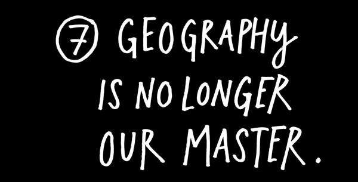
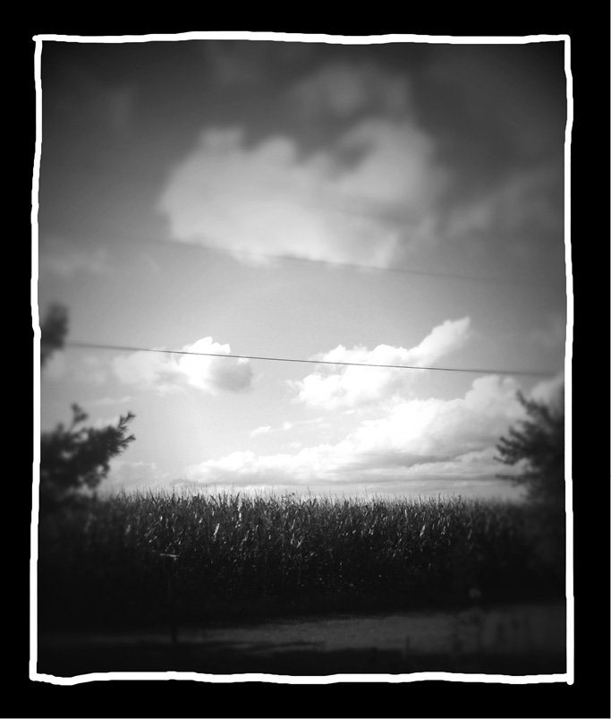
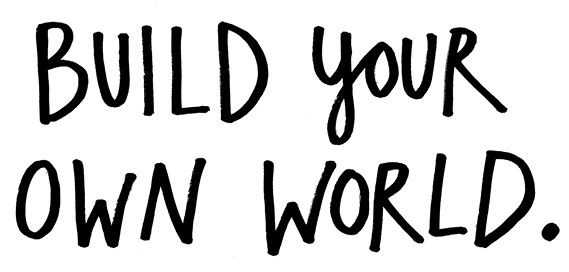
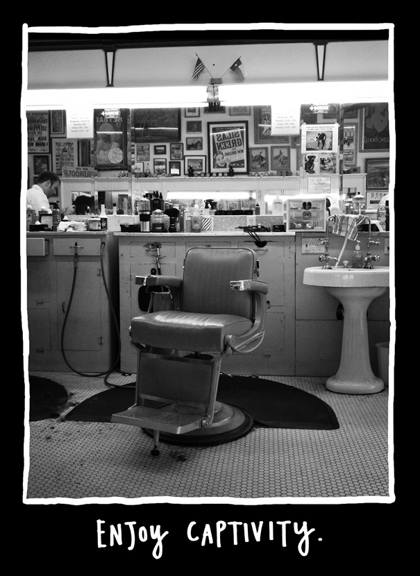
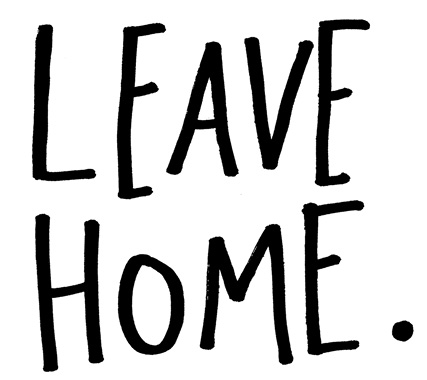
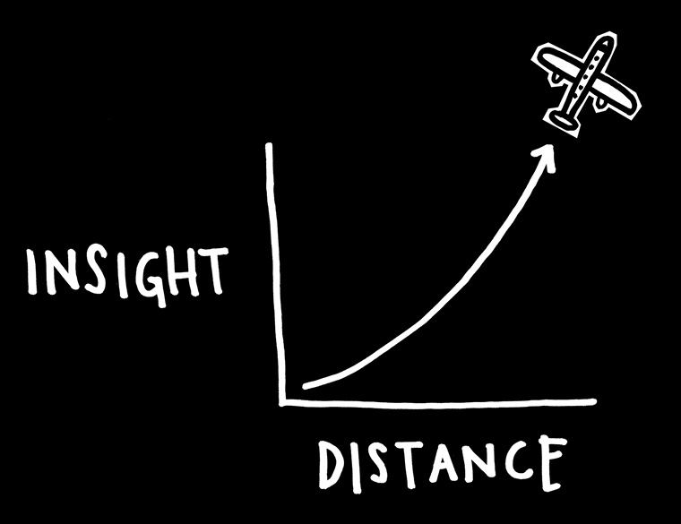

I grew up in the middle of a cornfield in southern Ohio. When I was a kid, all I wanted to do was get someplace where something was happening.
Now I live in Austin, Texas. A pretty hip place. Tons of artists and creative types everywhere. And you know what? I’d say that 90 percent of my mentors and peers don’t live in Austin, Texas. They live everywhere. I know them from the Internet.
Which is to say, most of my thinking and conversation and art-related fellowship is online. Instead of a geographical art scene, I have Twitter buddies and Google Reader.
You don’t have to live anywhere other than the place you are to start connecting with the world you want to be in. If you feel stuck somewhere, if you’re too young or too old or too broke, or if you’re somehow tied down to a place, take heart. There’s a community of people out there you can connect with.
In the meantime, if you’re not into the world you live in, you can build your own world around you. (Now would be a good time to put on your headphones and cue up the Beach Boys song “In My Room.”) Surround yourself with books and objects that you love. Tape things up on the wall. Create your own world.
Franz Kafka wrote, “It isn’t necessary that you leave home. Sit at your desk and listen. Don’t even listen, just wait. Don’t wait, be still and alone. The whole world will offer itself to you.” And Kafka was born a century before the Internet!

All you need is a little space and a little time—a place to work, and some time to do it; a little self-imposed solitude and temporary captivity. If your living situation doesn’t allow for that, sometimes you can find solitude and captivity in the wild. When I was a kid, my mom used to drag me to the mall. Before she did any shopping, she took me to the bookstore and bought me any book I wanted. We’d go into stores and I would sit in a chair and read my book while she shopped. This went on for years. I read a lot of books.
Now I have a car and a mobile phone. I’m always connected, never alone or captive. So, I ride the bus to and from work, even though it’s 20 minutes faster to drive. I go to a barbershop that’s first-come, first-served, without Wi-Fi, and always busy with a wait of a few hours. I keep my laptop shut down at the airport. I hang out in the library.
I always carry a book, a pen, and a notepad, and I always enjoy my solitude and temporary captivity.

“Distance and difference are the secret tonic of creativity. When we get home, home is still the same. But something in our mind has been changed, and that changes everything.”
—Jonah Lehrer
To say that geography is no longer our master isn’t to say that place isn’t important. Where we choose to live still has a huge impact on the work we do.
At some point, when you can do it, you have to leave home. You can always come back, but you have to leave at least once.
Your brain gets too comfortable in your everyday surroundings. You need to make it uncomfortable. You need to spend some time in another land, among people that do things differently than you. Travel makes the world look new, and when the world looks new, our brains work harder.
The time I was lucky enough to spend living in Italy and England when I was 19 and 20 certainly changed my life, but I would note that a foreign culture isn’t necessarily across the sea or in another country—for most folks who grew up where I grew up, Texas might as well be Mars. (I’ve lived here a while. Sometimes it still feels like Mars.)

If we know we need to leave home, where should we go? Where should we choose to live? There’s a bunch of different factors to consider, all of them depend on your own tastes. Personally, I think bad weather leads to better art. You don’t want to go outside, so you stay inside and work. When I lived in Cleveland, I got a lot of work done in the brutal months of winter. Down here in Texas, I get all my work done in the wicked hot summers. (The Cleveland winter and the Texas summer last about the same length of time—half the year.)
It helps to live around interesting people, and not necessarily people who do what you do. I feel a little incestuous when I hang out with only writers and artists, so I enjoy the many filmmakers, musicians, and tech geeks who live in Austin. Oh, and food. The food should be good. You have to find a place that feeds you—creatively, socially, spiritually, and literally.
Even if you set up a new home, you need to leave it now and then. And at some point, you might need to just move on. The good news is that nowadays, a lot of your peers are right where you left them—on the Internet.